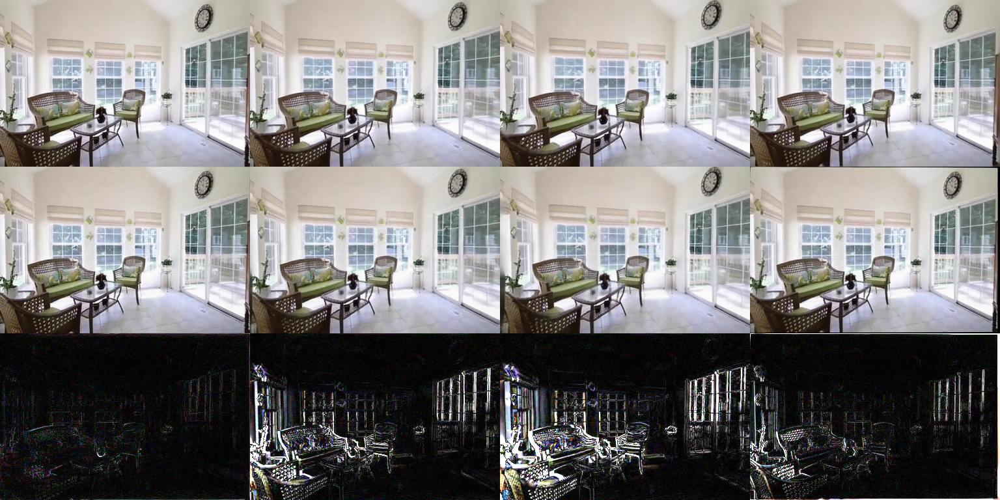
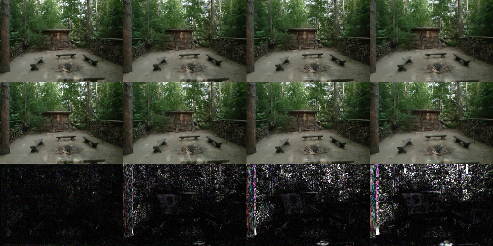

Why single-image 3DGS is structurally attackable
Feed-forward single-image 3D Gaussian Splatting (Flash3D, Splatter Image, pixelSplat, MVSplat, DepthSplat) turns one photo into a renderable 3D scene in a single forward pass, with no per-scene optimization. These models are moving quickly toward deployment (AR/VR navigation, 3D asset generation).
Their robustness is underexplored. The one systematic study (AdvSplat) treats them like ordinary image models and applies pixel perturbations that degrade all views uniformly — which also wrecks the source view, so a defender inspecting the input reconstruction can spot it immediately.
We argue the interesting — and dangerous — attack surface is geometry-specific. Single-image reconstruction is ill-posed: depth comes from a learned monocular prior, and the source view alone cannot disambiguate many valid 3D explanations. Training only ever penalizes a finite set of novel views, never the full parallax manifold. That gap is a structural blind spot, not an incidental network weakness.
Method: Depth-Parallax Confusion
DPC perturbs only the source image (L∞ budget ε) and never touches model weights. It uses an opposite-sign dual objective: minimize the change to the source-view render while maximizing the change to attacker-sampled novel-view renders.
R₀ = source-view render (identity pose); P j = attacker-sampled auxiliary poses; λ trades off camouflage vs. damage.
Source-camouflaged
The first term keeps the observed reconstruction close to clean, so the attack hides where a defender looks.
Self-referential
Targets are the model’s own clean renders — no ground-truth novel views are ever needed.
Pose-agnostic
Optimized on auxiliary poses disjoint from the eval poses, so damage reflects geometry, not eval-pose overfitting.
We optimize with momentum sign-gradient and a random start in the L∞ ball (the squared novel term has zero gradient at δ=0). We provide a white-box instantiation on Flash3D (gradients verified to flow from the novel render, through the rasterizer and Gaussians, back to the source RGB via UniDepth) and a query-only black-box variant using NES over a low-frequency DCT basis.
Results
Main result — the camouflage effect
Flash3D, RealEstate10K (MINE present split), ε=8/255, λ=3, 40 steps, n=100 scenes. Eval poses (tgt5/tgt10/tgt_rand) are unseen by the attack.
| View | Clean PSNR | DPC PSNR | Δ PSNR | Clean LPIPS | DPC LPIPS |
|---|---|---|---|---|---|
| src (observed) | 37.83 | 35.21 | −2.6 | 0.025 | 0.126 |
| tgt5 | 28.73 | 23.96 | −4.8 | 0.104 | 0.208 |
| tgt10 | 26.44 | 21.28 | −5.2 | 0.139 | 0.259 |
| tgt_rand | 26.35 | 21.38 | −5.0 | 0.151 | 0.268 |
Novel degradation (~5.0 dB) is ~1.9× the source degradation (2.6 dB), and rises monotonically with parallax (src −2.6 < tgt5 −4.8 < tgt10 −5.2) — the signature of a geometry-level, not appearance-level, attack.
DPC vs. baselines — the camouflage term matters
Same budget (ε=8/255), same optimizer (40 steps, 4 aux poses), n=100. “camouflage” = |novel Δ| − |src Δ|; positive means novel is hurt more than source.
| Method | src Δ | tgt5 Δ | tgt10 Δ | tgt_rand Δ | novel avg | camouflage |
|---|---|---|---|---|---|---|
| random noise | −1.9 | −0.7 | −0.6 | −0.7 | −0.67 | source hurt more |
| naive-PGD (λ=0) | −20.7 | −13.1 | −11.3 | −11.5 | −12.0 | −8.7 (kills source) |
| DPC (ours) | −2.6 | −4.8 | −5.2 | −5.0 | −5.0 | +2.4 (novel » source) |
(1) Random noise at the same budget is nearly harmless (novel −0.67 dB), so DPC’s effect comes from optimization, not perturbation magnitude. (2) naive-PGD does big novel damage but collapses the source view by 20.7 dB — trivially detectable. (3) DPC is the only method whose novel damage exceeds its source damage: the only genuinely source-camouflaged attack.
Qualitative


ε ablation
DPC (λ=3, 40 steps). Source-camouflage holds at every budget.
| ε | n | src Δ | tgt5 Δ | tgt10 Δ | tgt_rand Δ | camouflage |
|---|---|---|---|---|---|---|
| 4/255 | 50 | −1.5 | −2.6 | −3.1 | −2.8 | yes |
| 8/255 | 100 | −2.6 | −4.8 | −5.2 | −5.0 | yes |
| 16/255 | 10 | −5.7 | −7.1 | −7.6 | −9.2 | yes |
Cross-architecture evidence via the shared depth prior
Single-image 3DGS methods share a monocular-depth prior (UniDepth) to place Gaussians. We craft DPC using only Flash3D’s rendering loss, then measure the corruption of the raw UniDepth prediction (n=40, ε=8/255):
| Metric | Value |
|---|---|
| depth AbsRel (attacked vs. clean) | 0.958 |
| pixels with >10% depth shift | 65% |
| source RGB PSNR (attacked vs. clean) | 32.5 dB |
A perturbation that barely changes the source image (32.5 dB) shifts the shared depth prior by ~96% relative error. Because other single-image 3DGS reconstructors consume the same prior, DPC targets a component they all depend on — evidence the vulnerability is architectural, not Flash3D-specific.
Defense: multi-view consistency detector
| Detector | AUC | clean score | attacked score |
|---|---|---|---|
| multi-view curvature | 0.555 | 4.84e−2 | 5.00e−2 |
A training-free consistency check barely beats chance (AUC 0.555): DPC keeps the reconstruction internally plausible around the source, so it is not reliably flagged. This motivates dedicated defenses (adversarial training, depth-prior regularization) — an open problem.
Region-separated damage analysis
Where does DPC’s damage land? Using only the clean source depth + camera poses, we partition each novel view into visible / occluded / beyond-frustum (method-agnostic forward-warp). n=80, ε=8/255.
| Region | Clean PSNR | DPC PSNR | Δ PSNR | avg fraction |
|---|---|---|---|---|
| visible (source-observable) | 26.6 | 21.1 | −5.5 | 96% |
| occluded (disocclusion holes) | 17.3 | 12.9 | −4.5 | 1.6% |
| beyond-frustum (never observed) | 20.2 | 9.7 | −10.6 | 8.3% |
The beyond-frustum region (completely unobservable from the source camera) is destroyed ~2× more than the visible region (Δ −10.6 vs −5.5 dB). DPC concentrates damage exactly where the source view has no photometric constraint — definitive evidence of a geometry-level, not appearance-level, attack.
Scope & honesty
- Source camouflage is relative (novel » source), not perfect invisibility (~2.6 dB source drop at ε=8/255).
- Cross-architecture is shown via the shared UniDepth prior; a full second-model end-to-end table (CATSplat) is blocked by missing public inference assets (per-scene LLaVA features), which we state rather than work around.
- The black-box variant is validated on synthetic renderers + unit tests; full-Flash3D black-box is compute-bound (~2k forwards/scene).
- All numbers report n; small-n ablations are labeled. Baseline weights are never modified.
Reproduce
cd flash3d # official Flash3D repo, weights frozen
source .venv/bin/activate
export CUDA_HOME=/usr/local/cuda-11.8 HF_HUB_OFFLINE=1 TRANSFORMERS_OFFLINE=1
# unit tests
python -m pytest flash3d-attack/tests -q
# main DPC evaluation
python flash3d-attack/attacks/eval_dpc_flash3d.py \
--method dpc --max_scenes 100 --steps 40 \
--epsilon 0.0314 --lambda_src 3.0 \
--out flash3d-attack/results/main_dpc_n100.jsonSee the repository for baselines (random, naive-PGD), the black-box variant, depth-transfer, defense, and figure scripts.